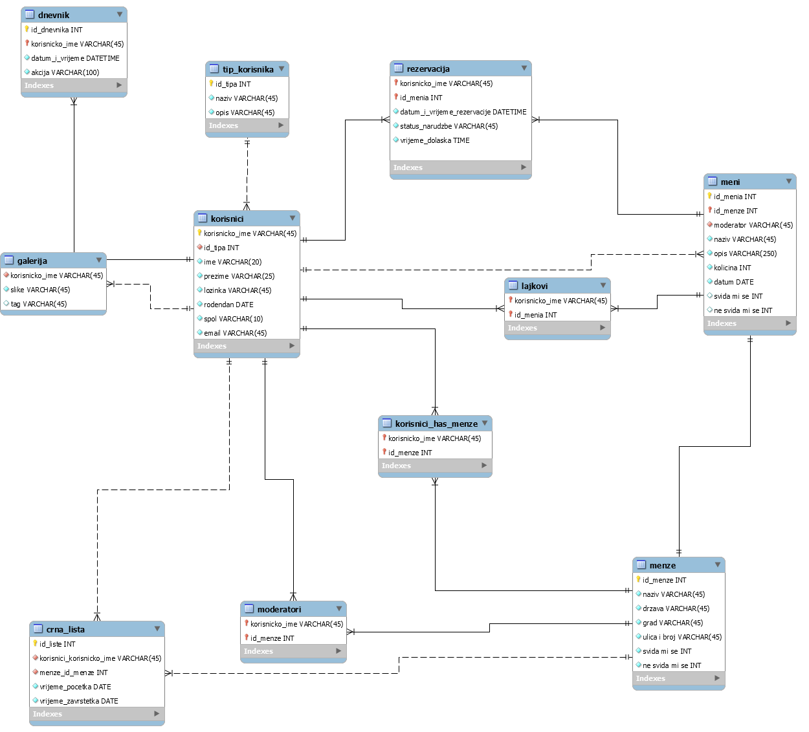

ERA model prikazuje sve tablice u bazi podataka koje su potrebne za realizaciju susatava.
NAVIGACIJSKI DIJAGRAM

Navigacijski dijagram prikazuje na koja navigacijska svojstva može ići koji korisnik. Treba napomenuti da administrator još ima mogućnost CRUD kontrola za svaku tablicu.
aktivacija.php
Skripta omogućuje realizaciju aktivacije registriranog korisnika. Provjerava da li je prošlo 12 sati od slanaja aktivacijskog linka korisniku, i reagira na odgovarajući način.
baza_class.php
Klasa koja omogučuje rad s bazom podataka. Spajanje na bazu podataka, izvršavanje upita nad bazom podataka i odspajanje s baze podataka.
detalji_meni.php
Omogučuje promjenu menija, odnosno promjenu količine određenog menija, u slučajevima kada je ta promjena dozvoljena.
dnevnik.php
Klasa koja omogučuje rad s dnevnikom. Upis radnji koje korisnik izvodi u dnevnik, a prije toga priprema za upis u bazu podataka.
dodaj_aktivacijski_kod.php
Kod administratora omogućuje dodavanje aktivacijskog koda za nekog korisnika u bazu podataka.
dodaj_crnu_listu.php
Kod administratora omogućuje dodavanje korisnika na crnu listu neke menze.
dodaj_korisnika.php
Kod administratora omogućuje dodavanje korisnika u bazu podataka.
dodaj_lajk.php
Kod administratora omogućuje dodavanje lajka nekog korisnika određenom meniju i zapis tog lajka u bazu podataka.
dodaj_lajk_menze.php
Kod administratora omogućuje dodavanje lajka nekog korisnika određenoj menzi i upis tog zapisa u bazu podataka.
dodaj_menzu.php
Kod administratora omogućuje dodavanje menze i detalja menze (adresa) u bazu podataka.
dodaj_moderatora.php
Kod administratora omogućuje dodavanje moderatora(korisnika) određenoj menzi.
dodaj_pomak.php
Kod administratora omogućuje promjenu vrijednosti u tablici pomak. Na taj način promjenu vremena aplikacije.
dodaj_sliku.php
Kod administratora omogućuje dodavanje slike u bazu podataka.
dodaj_tip_korisnika.php
Kod administratora omogućuje dodavanje tipa korisnika u bazu podataka.
dodavanje_meni.php
Skripta omogućuje da moderator ili administrator dodaju određeni meni nekoj menzi. Odrede za koji dan vrijedi taj meni i kolika je količina menija.
galerija.php
Skripta omogućuje pregled slika koje korisnik ima dodane i pretraživanje slika prema tagovima. Isto tako omogučuje formu za dodavanje novih slika.
index.php
Naslovna stranica sustava. Omogućuje pregled rezervacija i status svih rezervacija. Isto tako omogućuje pregled crnih lista(prikazuje da li je korisnik na crnoj listi neke menze i ako je do kad).
ispis_slika.js
Ajax skripta koja omogučuje prikaz slika s obzirom na tagove, odnosno mijenjaju se slike s obzirom kako se mjenja tag koji korinsik unosi.
menze.php
Omogučuje pregled menija za odabranu menzu od strane korisnika. Administratoru i moderatoru omogućuje pristup nekim drugim stranicama kao što su dodavanje menija, uređivanje menija i pregled rezervacija.
odjava.php
Odjavljuje korisnika sa sustava, odnosno briše korisničku sesiju.
popis_lajkova.php
XML datoteka koju korisni AJAX kako bi prikazao popis broja lajkova i dislajkova za pojedini meni.
popis_meni.php
XML datoteka koju korisni AJAX kako bi prikazao sve menije na stranici menze.php s obzirom na promjenu menze. Ova datoteka sadrži podatke o svim menijima.
popis_rezervacija.php
XML datoteka koja sadrži popis svih rezervacija koje se nalaze u bazi podataka.
popis_slika.php
XML datoteka koja sadrži popis svih slika koje se nalaze u bazi podataka.
posjecenost.php
Skripta prikazuje posjećenost korisnika određenoj stranici. Taj popis se može filtrirati prema korisniku.
postavke.php
Skripta omogućuje pregled svih tablica iz baze podataka, ažuriranje istih i brisanje entiteta iz tablica. Omogučuje i pomak vremena sustava.
pregled_rezervacija.php
Administratoru i moderatoru omogućuje pregled rezervacija od strane drugih korisnika. Ova skripta omogućuje jedino i samo pregled(tko i kada) ne i upravljanje rezervacijama.
preglednik.css
CSS datoteka koja određuje izgled stranice. Tijela stranice, zaglavalja i navigacije.
prijava.php
Skripta za prijavu provjerava da li je korisnik registriran. Ako je registriran, da li aktivan, da li mu je račun otključan, da li je unjeo dobru lozinku. U slučaju da je sve u redu kreira sesiju i preusmjerava korisnika na naslovnicu.
promjena_lozinke.php
Link na skriptu se šalje korisniku kada aktivira funkciju zaboravljena lozinka. Skripta provjerava jel unesena lozinka u ispravnom formatu i u slučaju da je mijenja lozinku u bazi podataka.
provjera_registracije.js
Javascript dokument koji sadrži odeđene funkcije za provjeru validnosti unesenih podataka krisnika prilikom registracije. Funkcije provjeravaju da li je mail unesen u korektnom obliku, da li je unesen kontakt, da li lozinka ima 8 simbola, da li su lozinke jednake.
registracija.php
Skripta omogućuje korisniku da unese svoje podatke i na taj način se registrira. U slučaju da je korisnik unjeo neispravne podatke obavještava ga o pogrešci. Kada korisnik unese ispravne podatke skripta ga upisuje u bazu podataka i šalje korisniku na uneseni mail podatke za registraciju.
rezervacija.php
Skripta omogućuje korisniku da rezervira meni u željenoj količini i da odredi u koje vrijeme želi rezervaciju.
sesija.class.php
Klasa koja omogućuje rad sa sesijom. Funkcija koja kreira sesiju i sesiju sprema u obliku polja u superglobalnu varijablu $_SESSION.
spremi_pomak.php
Skripta dohvaća pomak sa stranice http://barka.foi.hr/WebDiP/pomak_vremena/vrijeme.html i sprema ga u tablicu u bazi podataka.
statistika.php
Skripta omogućuje prikaz statistike lajkova menzama i lajkova za pojedini meni pojedine menze. Uz to prikazani su datumi kada je bilo koji meni.
trazena_slika.js
Skripta prikazuje slike filtirirane prema tagu unesenom od strane korisnika.
upload.php
Skripta uploada sliku na server u direktorij koji ima isto ime kao što je korisničko ime korisnika koji uploada sliku. Ako korinsik nema još kreiran svoj direktorij onda skripta prvo kreira direktorij.
uredivanje_menija.php
Omogućuje uređivanje menija odnosno promjenu vrijednosti stanja menija(raspoložive količine menija).
vrijeme.php
Klasa za rad s vremenom. Računa vrijeme tako da mu pridoda vrijednost pomaka iz baze podataka te omogućuje funkcije koje vraćaju vrijeme u različitim oblicima.
zahtjev_lozinke.php
Šalje formular za promjenu lozinke korisnika na mail koji je unesen na skripti.
KORIŠTENE TEHNOLOGIJE I ALATI
PHP
Jezik za rad na serverskoj strani. Vrlo koristan jezik kojim je bilo moguće ostvariti sve zadane funkcionalnosti u ovom projektu. Nije kompliciran jezik i vrlo lako se koristi.
AJAX
Jezik za dinamički promjenu sadržaja stranice.
Javascript
Skripti jezik koji se izvršava na korisničkoj strani. Koristio sam ga za određene provjere prilikom registracije kako bih na taj način rasteretio promet na serverskoj strani
HTML
Jezik za rad kreiranje elemenata web stranice.
CSS
Jezik za grafičko oblikovanje HTML objekata.
NetBeans
Razvojno okruženje koje omogučava rad sa svim navedenim tehnologijama (programskim jezicima). Vrlo jednostavno razvojno okruženje koje ne nudi veliki broj dodatnih mogućnosti, ali je jednostavno i zbog toga učinkovito i korisno.
phpMyAdmin
Okruženje unutar kojeg se nalazi baza podataka u MySQL-u. Isto tako jednostavni alat za rad s bazom podataka koji omogućuje sve naredbe nad bazom podataka koje su moguće kroz komandno sučelje.
MySQLWorkBench
Alat za dizajniranje baze podataka. Jendostavno kreiranje tablica u bazi podataka i jednostavno povezivanje istih.
CAPTCHA-za provjeru da korisnik koji se registrira nije robot. Koristio sam reCAPCHU od Google-a.